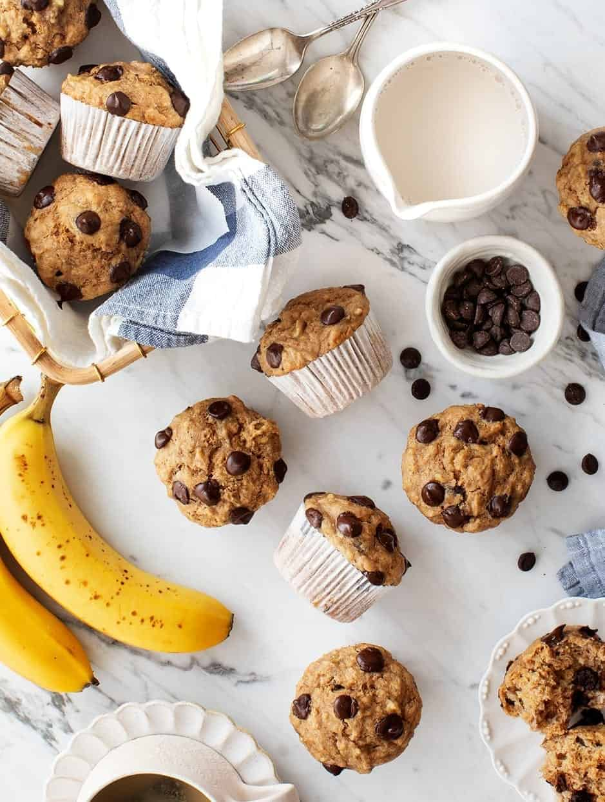

The Little Kitchen
A family food blog with easy, well tasted, family approved recipes!
Dessert Ideas

- Oatmeal Cookies
- Healthy Banana Muffins

Ingredients :
- 4 tablespoons ground flaxseed + 4 tablespoons warm water*
- 1¾ cups whole-wheat pastry flour, (or white/wheat mix)
- 1 teaspoon cinnamon
- ¼ teaspoon nutmeg
- 1 teaspoon baking powder
- ½ teaspoon baking soda
- ½ teaspoon sea salt
- ⅔ cup almond milk
- 1 tablespoon apple cider vinegar
- ⅓ cup maple syrup
- ⅓ cup olive oil or any neutral oil
- 1 teaspoon vanilla
- 1 cup mashed ripe banana, about 2 bananas
- ½ cup chocolate chips, optional
Instructions :
- Preheat the oven to 350°F and lightly grease or spray a 12-cup muffin tin.
- In a small bowl, combine the flaxseed and warm water and set aside to thicken for 5 minutes.
- In a large bowl, combine the flour, cinnamon, nutmeg, baking powder, baking soda, and salt./li>
- In a medium bowl, combine the almond milk, apple cider vinegar, maple syrup, oil, and vanilla and stir to combine. Stir in the flaxseed mixture.
- Add the wet ingredients to the bowl of dry ingredients and stir just until combined. Do not overmix. Fold in the mashed banana and chocolate chips, if using. Use a ⅓ cup measuring scoop to divide the batter into the muffin tin.
- Bake 18 to 20 minutes or until a toothpick comes out almost clean. Let cool 15 minutes, then transfer to a wire rack to continue cooling.
- Pumpkin Bars